ML learned a mapping between env correlates and presence/absence.
MaxEnt
A classical statistical model for fitting presence data to environmental evidence.
A foundational MaxEnt SDM paper: Phillips, Anderson & Schapire (2006).
The inputs
What information does MaxEnt receive?
Where the species was recorded.
Climate across the study area.
Background locations describe the environments available in that area.
A blank place on this map can still contain frogs.
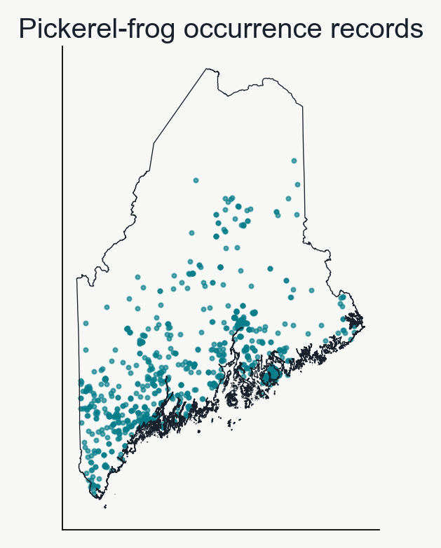
The ecological signal
Recorded climate and available climate
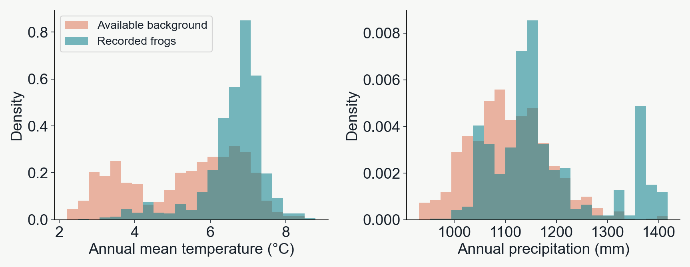
What environmental conditions occur more often in the records than in the sampled background?
The name
Maximum entropy starts with broad support
With little evidence, keep the prediction broadly spread.
Imagine four equal-area cells with temperatures of 2, 4, 6, and 8°C.
Equal weights imply a mean of 5°C.
Weights share a total of 100%. They are not occupancy probabilities for individual cells.
Evidence constrains the prediction
The observations constrain the weights
Suppose the mean temperature at records is 6°C.
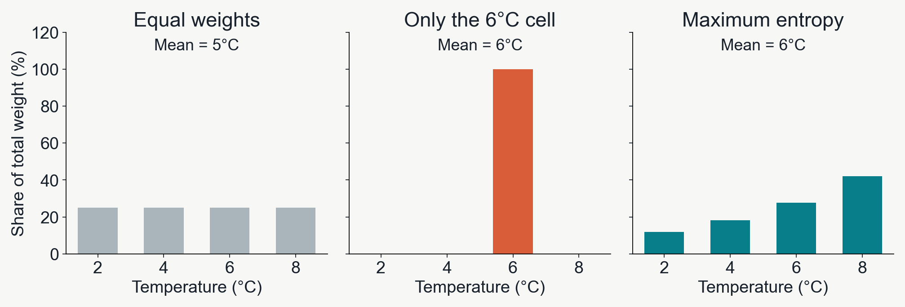
The mean constrains the weights. It does not identify a temperature optimum.
Intuition
The mean is a balance point
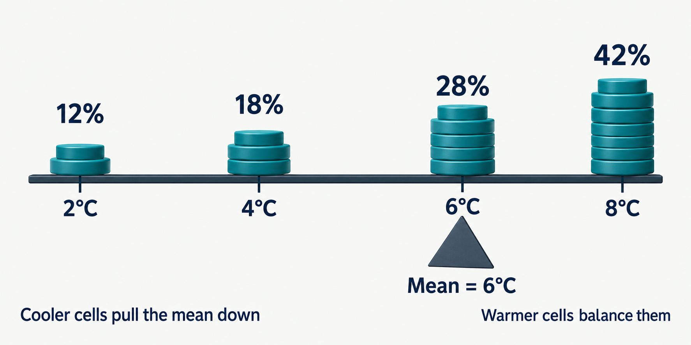
Keeping weight on cooler cells requires extra weight above 6°C to balance it.
Many weights can match the mean. MaxEnt keeps them broadly distributed while respecting that balance.
Two climate variables
Balance temperature and rainfall together
At recorded sites, the averages are:
6°C temperature 1,100 mm rainfall
The same weights must balance both averages.
MaxEnt spreads weight as broadly as these constraints allow.
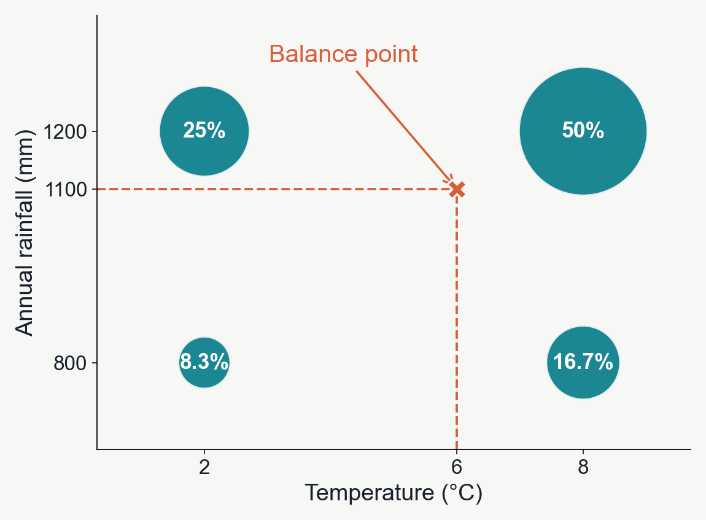
Each circle represents a climate combination, not a map location. Circle area shows relative weight.
A real MaxEnt fit
MaxEnt prediction projected across the landscape
Just like our previous examples, the fitted MaxEnt model can be used to predict suitability at unobserved locations.
Internally, a penalty discourages unnecessarily complex responses.
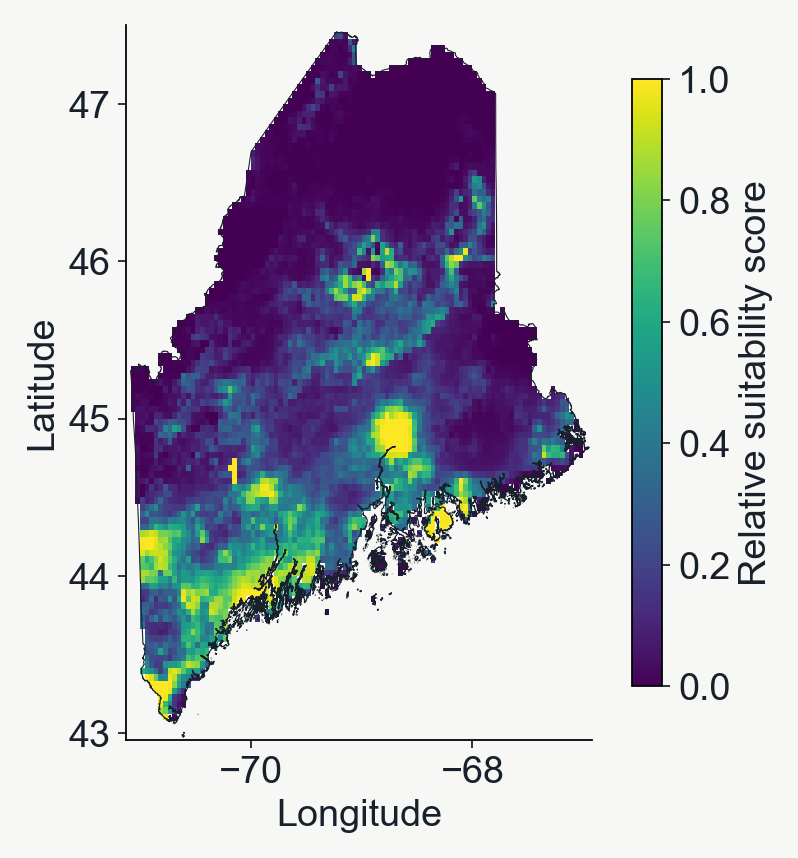
Accounting for observation bias when sampling background points
The background can influence the predictions
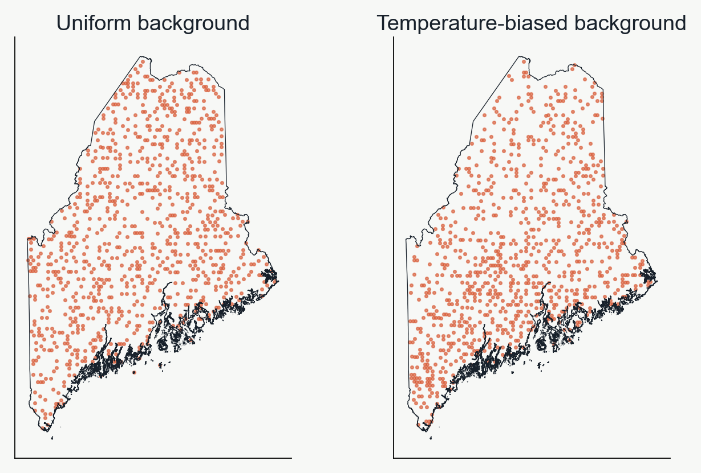
Observations will be biased toward where humans usually go (near roads, in parks, where they think the organism will be), so it's important to replicate this bias as much as possible when sampling background points.
In the lab we will take mean annual temperature as a proxy for sampling bias, but in practice you might do something fancier.
Geographic sample weights
Sample weights change a point’s influence
Many neighboring observations can repeat similar information.
Distance-based weights give relatively isolated records more influence.
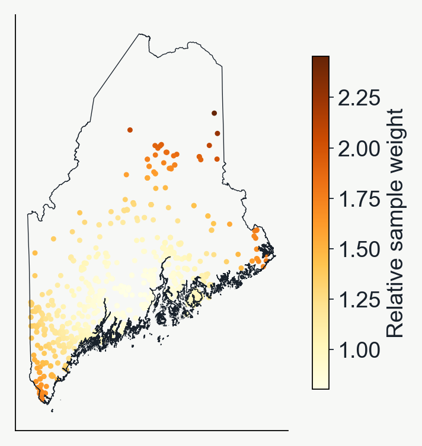
Geographically aware splitting
Geographic splits withhold whole blocks
Keep an entire square in training or testing.
Lab08 uses alternating 50 km squares.
Teal training set. Coral test set. Nearby locations often share climate and sampling history.
Evaluating robustness of test/train splits
Cross-validation rotates the test group
Presence/background points are split into 'K-fold' groups, and each group takes a turn as the withheld data. A new model is fit to each 'fold' of the data, and performance is evaluated as the average across N-folds.
Group A
Group B
Group C
Round 1
Test
Train
Train
Round 2
Train
Test
Train
Round 3
Train
Train
Test
A group is often called a “fold.”
Two-fold spatial cross-validation
The checkerboard groups can swap roles
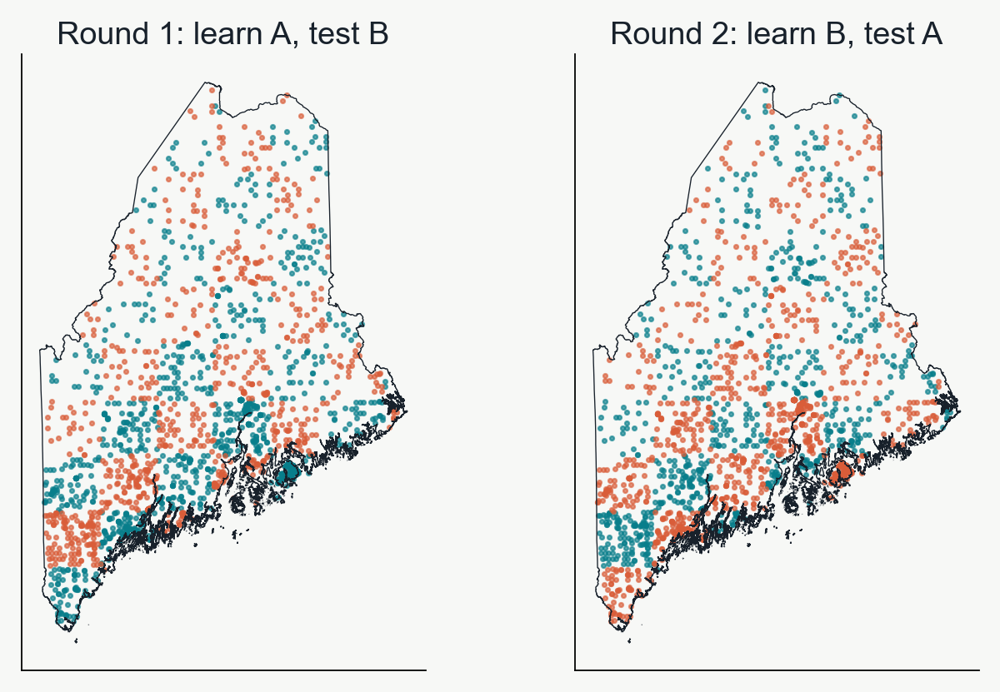
Each model predicts the group of locations it did not use for learning.
Leave-one-out (LOO) cross-validation is the logical extreme of k-fold
Buffered LOO controls for spatial auto-correlation
Hold out one observation as the test data.
Remove training points within 50 km.
Fit the SDM to all the remaining points.
Evaluate prediction accuracy for the one held-out point.
Repeat for another observation.
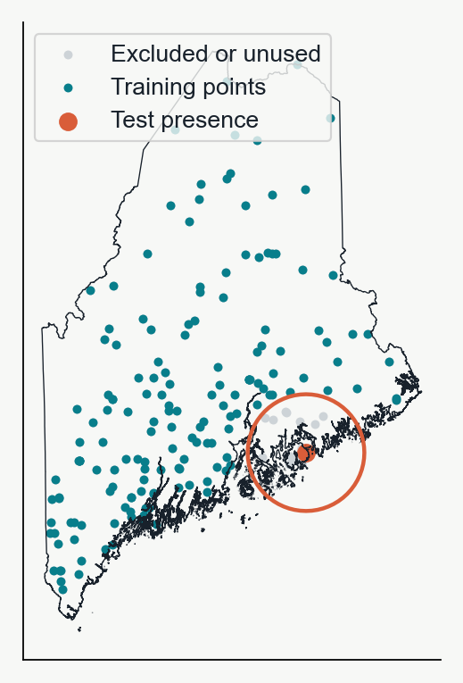
What does the model predict?
Each location receives a suitability score
A score is the model’s predicted suitability for a location. Higher values mean the model considers its climate more suitable.
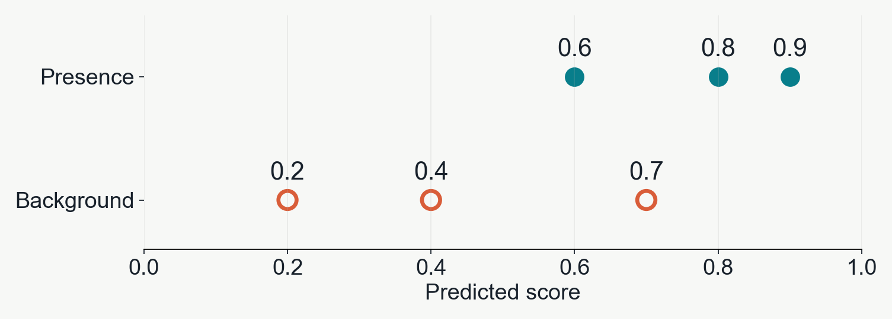
Do locations with recorded frogs tend to receive higher scores than background locations?
Illustrative predictions from 0 to 1. A score of 0.8 does not mean an 80% chance of occurrence.
Comparing predictions
Does a recorded site get the higher score?
Ranking means ordering sites from higher to lower predicted suitability. A site scoring 0.9 ranks above a site scoring 0.7.
Recorded-site score
Background 0.7
Background 0.4
Background 0.2
0.9
Higher
Higher
Higher
0.8
Higher
Higher
Higher
0.6
Lower
Higher
Higher
The recorded site scores higher in 8 of 9 pairs. This gives AUC = 8 ÷ 9 ≈ 0.89.
AUC summarizes this ordering: 1 = every pair, 0.5 ≈ chance ordering.
From continuous predictions to a yes/no map
A cutoff decides which sites count as suitable
Choose a score as the cutoff. Scores at or above it become “predicted suitable.” At cutoff 0.8, scores 0.9 and 0.8 qualify; 0.7 and lower do not.
Cutoff
Recorded sites predicted suitable
Background sites predicted suitable
0.8
2 of 3 (67%)
0 of 3 (0%)
0.5
3 of 3 (100%)
1 of 3 (33%)
0.2
3 of 3 (100%)
3 of 3 (100%)
A lower cutoff labels more places suitable, including more background sites.
The cutoff changes the yes/no labels. It leaves the model’s original suitability scores unchanged.
Connecting the table to a curve
The ROC curve tries every possible cutoff
Each point on the curve represents a cutoff.
At 0.8: include 67% of recorded sites and 0% of background.
At 0.5: include 100% of recorded sites and 33% of background.
The shaded area under the curve (AUC) is 0.89, matching our 8-of-9 comparison.
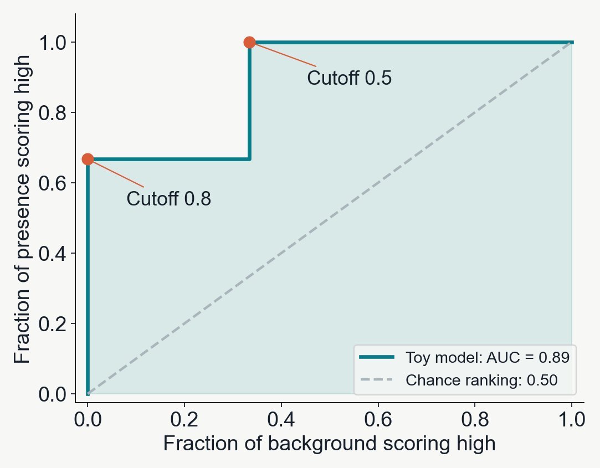
Curves nearer the upper-left corner include more recorded sites while including less background.
High AUC isn't always 'better'
Spatially/environmentally informed splits can improve model generalizability
Evaluate using
AUC
What is the model predicting?
Training records
0.875
Locations it already learned from
A random test split
0.798
Held-out points, often near training points
A spatial test split
0.664
Entire withheld geographic blocks
A higher random-test AUC can reflect an easier test, rather than better prediction in new areas.
Nearby points share climate and local patterns. Spatial splits reduce this overlap and help expose overfitting to those patterns.